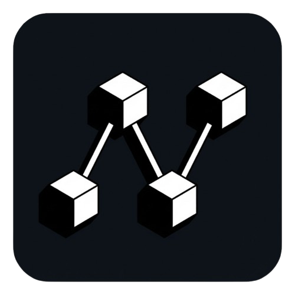
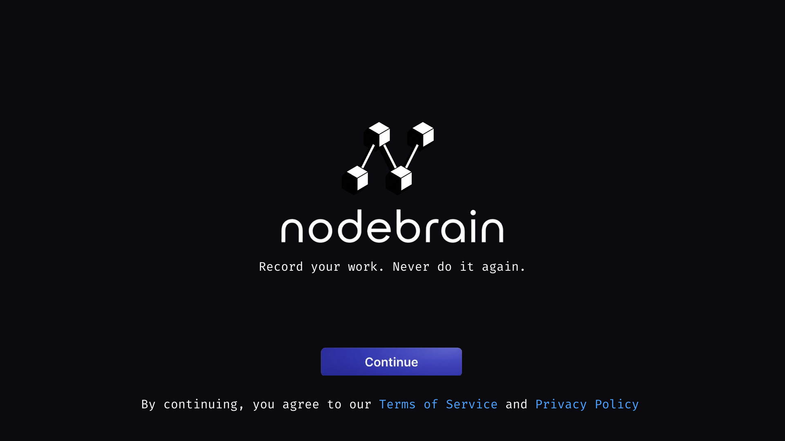

NodeBrain
You can add the AI assistant later from “Ask about this site” on the Dashboard.
Record a task in your browser once, then run it whenever you want.
Nothing to download. Nothing to connect.
Also ask questions about a site you're working on.
Needs a 2.5 GB download, or an API key you already have.
Groq is free and takes about a minute. No credit card.
Groq only shows the key once — copy it before closing the tab.
Your key is encrypted and stored on your computer.
This runs on your machine. Nothing you ask it leaves your computer.
It's two files: an engine that runs it, and the model itself. Once they're on this computer, it works with no internet connection.
Already running Ollama? Use what's installed
Already have an API key? Use that instead
Your prompts go to that provider rather than staying on your machine.
Help improve NodeBrain by sending anonymous data about features used, agents created and run, which integrations are connected, model provider type, error categories, and setup completion. Please note that this will not include personal data or any sensitive information, such as your prompts, agent names, file paths, message contents, or credentials. Nothing from your vault is ever sent.
Data sharing is off by default. NodeBrain works fully offline either way.
You can always change this in the Vault tab under Settings.